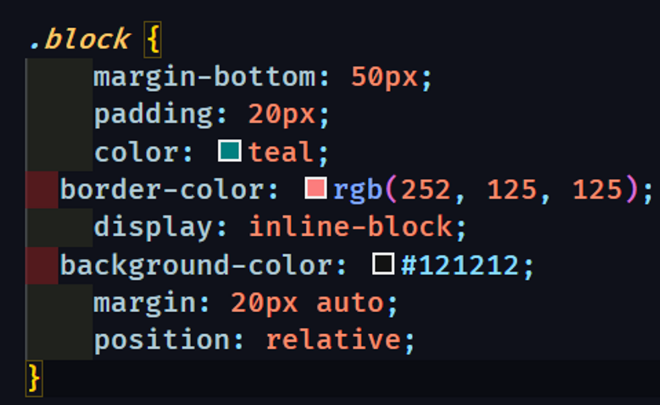

Code Style CSS
Хороший код — это код который удобно читать и поддерживать.
-
Хороший код должен быть простым:
— используйте легко читаемые селекторы и говорящие классы. По ним сразу можно понять к чему применяются стили.
— классы пишите в нижнем регистре (строчными буквами).
— вместо пробела в классах используйте знак «дефис». Старайтесь не использовать нижнее подчеркивание и camelCase.
— код должен быть в одном стиле: везде используется один порядок свойств, одинаковые отступы и пробелы, один стиль записи цветов и псевдоэлементов
плохо хорошо 
-
Оформляем блок со свойствами:
— после селектора, перед открывающей блок «фигурной скобкой» ставьте «пробел».
— в начале строки перед свойствами ставится «два пробела». Это самый популярный вариант.
— после двоеточия ставьте «пробел».
— обязательно ставить «точку с запятой» в конце свойства.
— ставьте закрывающую «фигурную скобку» на новой строке.
Между набором правил оставляйте одну пустую строку: 
Все стили пишем через селектор класса. Теги используем только для глобальных стилей, id в стилях не используем.
Избегайте использование !important.
Псевдокласс nth-child используем только со значениями even и odd. В остальных случая используем дополнительный класс.
-
Сохраняйте уровень вложенности не более двух элементов, если не используем БЭМ.
Плохо:
.block .faq .titleХорошо:.faq .title При использовании БЭМ вложенность не используется.
Обязательно указывайте альтернативный вид и тип семейства шрифтов.
Проверяйте вёрстку на переполнение.
У интерактивных элементов обязательны стили состояний: hover, focus, active, disabled.
Если используете свойство display: inline-block, обязательно добавляйте свойство vertical-align.
Свойство position используем в крайнем случае. Исключение: если иначе сделать невозможно или сложно.
У нулевых значений не нужно писать единицы измерения. Когда значение 0, то не важно это px, % или попугайчики.
Значения цвета hex пишем в нижнем регистре.
Проверяйте css в валидаторе — https://jigsaw.w3.org/css-validator/
Дополнительно
В названиях файлов и папок используйте только латиницу и буквы в нижнем регистре, без пробелов. Для разделения слов используйте «дефис» или нижние подчёркивание.